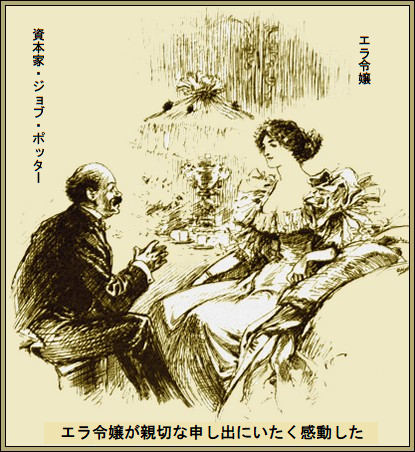
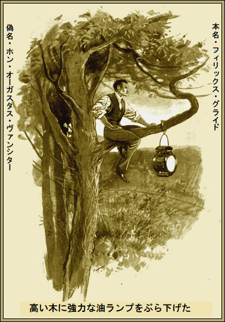
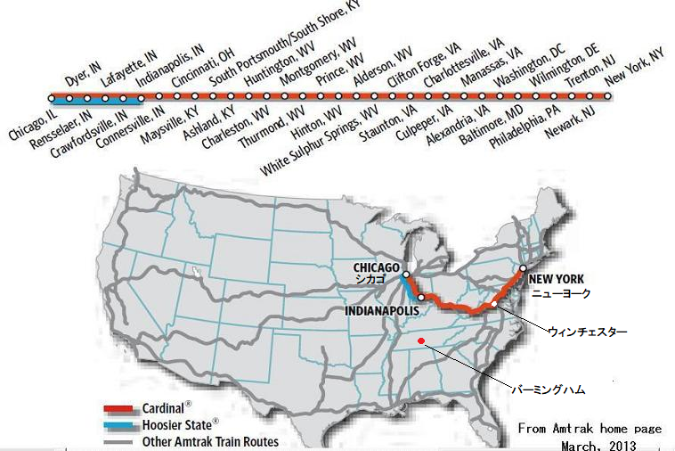
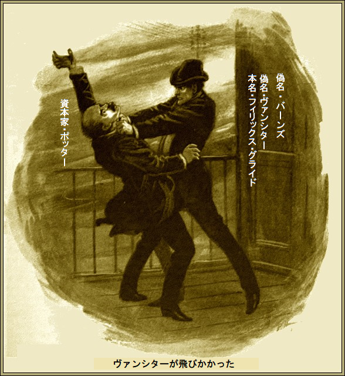
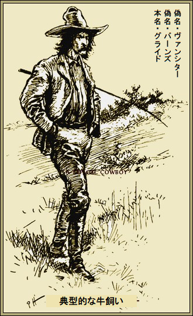

第一章
ジョブ・ポッターという名前はどんなに想像を膨らませても
普通の小柄な男が億万長者のポッター、
ヴァンシターも手ぐすね引いて待っていた。億万長者ポッターが提供したシカゴ・ロイヤル・バナーホテルの夕食はそれなりに優雅だ。
その晩、二人で食事中、億万長者ポッターがこう言った。
「アメリカ巡業はこれが最後だ。二か月以上だから帰国して腰を据えるよ」
伊達男のヴァンシターが応じた。
「私もです。親戚に会うのは子供のころ以来かな。アメリカへ移住したんです。財産が入りましてね。ここに来たおかげです。いやあ、また高級服が着られる身分ですよ。でも司教には世話がやけます」
「誰だい、司教とは」
とポッターが興味津津だ。
「クロイドン閣下ですよ。遠い親戚でね。療養に来たんです。ここで会う段取りをつけて、一緒に帰国します。あした到着です。顔が分からないかもなあ。でもエラ令嬢がよくお世話しているから」
「また誰だい、令嬢って」
ポッターがことさら令嬢を強調した。
「姪っこですよ、ポッターさん。並の器量で、活発な子です。大丈夫、あなたのご親切はちゃんと伝えますから。もしよければ到着次第、司教とエラを呼んで一緒に食事しましょう」
億万長者ポッターの顔が輝いた。ここでカードを切れば、英国経団連へ入会するきっかけが出来る。ポッター夫人が切望している団体だ。他の何にも勝る印象を与えようと
億万長者のポッターが言った。
「願ったりだ。エラ令嬢に薔薇十字を見せよう。女性はダイヤが好きだ。新聞でダイヤ購入を読んだと思うが」
ヴァンシターがあくびをして、物憂げにこう返事した。
「ええ、億万長者なら地球すら買い占めますよ」
ポッターがさえぎって言った。
「すごい石だぞ。見たいか」
ヴァンシターはうなずいたものの、気が乗らない。薔薇十字という有名な宝石は当代一の関心事なのに。
石というより宝石の塊で、蛇のように長くねじれており、カリフォルニアで発見されたとされるが、鑑定家によればブラジルから盗まれて、さる場所へ持ち込まれ埋められて、再び掘り返され、現地発掘という作り話をでっちあげたとか。
価値はざっと十万ポンド、実際はその二倍でも売れる。
ポッターが隣の寝室から珍品を持ってきた。
「すごいと思わないかね」
伊達男ヴァンシターが急に興奮した。もしポッターがころりと騙されて、あっという間に宝を盗まれると知ったなら、喜んではいられなかったろう。
伊達男ヴァンシター、別名フィリックス・グライドがもう一本煙草に火をつける様子は、人生を達観したかのよう。
ヴァンシターが言った。
「お宝はしまいなさい。私は寝ますから。疲れて死にそうです。司教とエラ令嬢が来たら知らせますよ」
＊
三日後、億万長者ポッターが興奮して喜んだのは、クロイドン司教閣下がエラ令嬢と到着して、金曜日に食事しないかと誘われたからだ。東部行き列車は月曜の朝に出発するので、そう時間はない。
ポッターが喜んだのなんの。ホテル支配人に面談し、自由に使ってよいという了解を取り付けて、費用に糸目をつけず、全てを徹底的に改造すると約束した。
すぐに、続き部屋を歓迎用に改装した。エラ令嬢の寝室や、司教の更衣室を特別装備するのは言うまでもない、客間もだ。
ここで、琥珀色のワインが泡立たなくなったころ、令嬢が美貌で男どもを魅了し、コーヒーを勧め、優しい笑みを振りまくはず。
億万長者ポッターが息巻いた
「金にかまうな。待望の名士だ。貴人に
約束の時刻に、エラ令嬢と司教が到着した。優雅でとても如才ない。その夜のうちにポッターが感じたのは、エラ令嬢がこの世に無比ということ。こんなに美しく魅惑的な女性にお目にかかったことはない。
とらえどころがなく、夢のような令嬢の魅力はニノン並だ。ポッターの才能の一つが本物を嗅ぎ分ける力であり、高級宝石の鑑定も生まれつきで伊達じゃないし、エラ令嬢もほんものと見た。
エラ令嬢のことは全く知らないが、にせものは直ちに見分け、決して見過ごさない。
エラ令嬢は優雅で友好的だった。ポッターを上流階級と見なしたようだが、同時に甘い言葉で、大きな違いのあることも意識的に伝えた。
億万長者ポッターとエラ令嬢は他の二人と離れて座った。司教はヴァンシターと話しこんでいる。
エラ令嬢が打ち解けてきた。じきに妻のマリアのことが話題になり、優しくこう言った。
「ポッターさん、ボルトン・ガーデンのどこかで奥さんにお会いしましたかね。これから公爵夫人とお呼びしなくては」
思わせぶりだが、やはり嬉しい。何の公爵夫人か知りたかったが、ポッターは尋ねなかった。
「イギリスへ帰れてうれしいでしょうな、エラ令嬢」
「少しはそうね。でもアメリカは大好きよ。司教のお世話が大変ですけど。神経衰弱なの」
ポッターが司教をちらと見て、同情した。司教は端整な顔、威厳のある態度だが、全然元気に見えない。
ポッターが言った。
「航海に出ればよくなりますよ」
エラ令嬢がつぶやいた。
「心配なことは長旅列車の騒音や雑踏を叔父が怖がることです。定期的に休憩と安静を取らなきゃいけないのです。失敗でした、乗換えや騒音が良くないというのに。とても心苦しいのは、王子のご招待を断りながら、王子の蒸気船で大西洋を渡ることです。もし特別列車でここからニューヨークまで行けたら、とても楽なのですが……。わたくしの宝石を質に入れてでもそうしたい気分ですが、それもできないし……」
「すっかり覚悟されたようですが」
「あ、いや、わたくしのことなら御心配に及びません、それに列車の乗り継ぎは楽しみですわ。でも司教は相席を望みません、特別列車は高いですし……。もしアメリカ大富豪の専用列車を借りられたら……。あとの旅は言うことないのですが。たわごとね」
ポッターがほほ笑んだ。今度こそ
「良いお店へいらっしゃいました。つまりご要望のものが手に入りますよ。プルマンカーのことをお聞きと思います。アレクセイ大公がアメリカ旅行で造らせた豪華客車です」
エラ令嬢も聞いたことがあった。ロシア大公がアメリカでお遊びする為に造らせてほどなく、今度はモナコが好都合な散財場所になったとか。
「夢のような客車だそうね。大公が自殺した後、億万長者が買い取ったとか。ポッターさん、ご存知？」
「もちろんです。私が買いましたから。いつもあちこち出かける時、専用プルマンカーは大助かりです。最近三回の旅行で客間にしました。でも向う数カ月は使う予定がありませんから、よろしければニューヨークへ静かな旅を司教へさし上げますよ、ぜひ」

エラ令嬢が親切な申し出にいたく感動した。ヴァンシターの入れ知恵などおくびにも出さない。最初堅く辞退した。
次第に自尊心と、司教のお世話との板挟みになった。果たして叔父の邪魔をしていいのだろうか、大方の見るところ次の大司教になろうかというのに。
「叔父が決めますが、ともかくポッターさん、こんな大恩にはお返しができません。叔父さん、ポッターさんの申し出をどう思い？」
司教は反対した。思いもよらないことだと言った。青白い両手を令嬢に向けた。よせと、無言で苦しみ、不安と解決の
それから五分間は、バイロン詩集の中の一番はかない一節のようだった。
誓って、賛成すまじ、させまじ
ポッターが司教の変化に気づいた。司教は末恐ろしい旅行と必死に戦っている。慈悲深い顔が満面の笑みになり、オペラの一節をぐっとこらえている。
億万長者ポッターは申し出がうまくいったことを知ってにんまり。もしかして、ある
司教が言った。
「全くお恥ずかしいですが、もう我がままは言いません。何かお礼できますか。こんな大恩にはできないような気がしますが……。ポッターさん、おかげで救われました」
億万長者ポッターが喜んだ。夢見始めたのは、ポッター卿とマリア令夫人がボルトン・ガーデン社交会を先導し……。
「司教さん、もうひどいことになりませんよ。旅の景色を心ゆくまで眺めてください。薔薇十字を銀行員からプルマンカーに届けさせます」
エラ令嬢は興味津津だ。
そして、夕まぐれ、あの素晴らしい宝石をしみじみ眺め、驚嘆した。ぞくぞくすると白状した。
エラ令嬢がこう言った。
「老婆心ながら、失くしちゃいけませんよ。おやすみなさい、ポッターさん」
＊
次の一日半、
翌晩、郵便特急列車で七百キロ進んだ。そこで荷物を持って降りて、用意した荷馬車に乗せた。それから一人で寂しい田舎を走った。やがて突き当たった場所は深い所から低木が生え、線路の端にかかっているところだった。
二時間ほどかかって、やっと仕事を終えた。完了したとき、二十メートルにわたり強力な弾力
でもまだ終わっていなかった。シカゴ方向へ二十キロ行くと、同じく寂しい場所に高い木々があり、その一本にヴァンシターが登り始め、手には何か大きな

ヴァンシターが自己満足してつぶやいた。
「やったぜ。ランプは五十六時間燃える。ここには誰も来ないし、邪魔もない。もし壊されたら、ポッターに不利になるだけだ。予定通りここでやっつければ、怪我はしない。そのあとは、司教とエラ令嬢が大喜びさ」
ヴァンシターは馬の所へ戻り、降りた駅に引き返した。西行き列車はちょっと待ち時間があったが、やっと来て、シカゴがにぎわうずっと前に、帰り着いた。
朝食の時間、ヴァンシターがクロイドン司教の個室に疲れ切った様子でぶらりと入ってきた。
エラ令嬢が笑った。
「ふふふ、重労働したみたいね」
物憂げな返事があった。
「そりゃもう。ああ、腹ペコだ」
第二章
ニューヨーク行き急行プルマンカーが発車して半時間、男が息を切らしノックもせず、億万長者ポッターの事務所に駆け込んできた。
「俺はバーンズというニューヨークの探偵だ。悪党共が嗅ぎつける前にここへ来るべきだったが、二日間監禁された。奴らは俺が数日逃げる心配ないと思っとる」
「いったい何の話ですか」
と億万長者ポッターが尋ねた。
「薔薇十字のことだ。それに司教とエラ令嬢と例のヴァンシターもだ。やつら大がかりな陰謀を
そして誘拐された生々しい話をバーンズ探偵がしゃべり続けた。また大ダイヤを金庫から奪い返す計画も話した。
億万長者のポッターが言った。
「電報を打たなくては。全員、私の専用プルマンカーに乗っていますから……」
バーンズ探偵がさえぎった。
「線が切られとる。奴ら二時間で列車から降りる。たぶん最初の停車駅フォート・アンソンだ。いいか、俺がすっかり段取りしたから、冷静なら、言われた通りにしてくれ。奴らはこの格好の俺が分からないから、じきに捕まえてやる。あなたは中央駅へ行って、特別列車を半時間以内に準備してくれ」
「一体全体、何のためですか」
「あなたと俺とで泥棒を追っかけるためだ。俺の計算では一時間以内に出発すればウィンチェスターで急行プルマンカーに追いつく。そのころ暗くなるので、気づかれずプルマンカーに乗り込める。いいか、我々は他人同士だ。さあ、事務所へ行って、会社の了解を取り付けてくれ、盗人から金庫の宝石を取り戻すためだ」

「なんてバカなことを言うんですか」
と億万長者ポッター。
バーンズ探偵は自信たっぷりだ。
「問答無用だ、あなたの金があれば何でもできるぞ。キミ、宝石をただでくれてやるのか、アホ……」
ポッターはそんなたまじゃない。正確に五十七分以内に、特別エンジン仕様の列車をシカゴから引き出し、さらに鉄道会社の運行を金で買った。
もうボルトン・ガーデンどころではない。費用のことを考えると頭が痛かった。それにエラ令嬢のことも……。
バーンズ探偵が憂鬱な妄想をさえぎった。
「計画を話しておこう。追跡方法はたいした問題じゃない。いずれにしろ捕まえるし、奴らの
ポッターは細心に指示を聞いた。次の一、二時間は室内をそわそわ、極度の不安におののく犠牲者だった。
もしプルマンカーに乗り移れなかったら、結果は悲惨なことになる。ウィンチェスター駅以降、千三百キロは止まらない。
一方のバーンズ探偵は自信満々だった。
「出発する前に慎重に計算した。八分の余裕があるはずだ。もうすぐ悪党どもを追い詰めてやる」
予言は完璧に当たった。臨時の仕立列車がウィンチェスター駅に着くころすっかり暗くなり、ポッターの眼前にくだんのプルマンカーの尾灯が見え、嬉しい光景があった。
バーンズ探偵がささやいた。
「いいか、忘れるなよ。まず宝石の回収だぞ。無理やりでもあなたが回収するまで、俺は何もできない。さて寝るか。時機が来たら、実行してくれ。それまで何もできん」
バーンズ探偵が寝台へ直行する様は、行動を知りつくした男そのものだった。
再び男が明かりに姿を現わした時、奇妙なことに、バーンズ探偵がすっかり消え、その代わり伊達男ヴァンシターがいた。そしてプルマンカーへ飛び乗った。
そっと忍び込むと、エラ令嬢が叫び声を上げた。
「まあ、あなたって、なんて人なの。心配していたのよ。ずっと列車に乗っていらしたんだ」
「きみを懲らしめるためだ。昨夜はとても無礼だったね」
「それは誰のせいですか」
「もちろんきみのせいだ。でも許すよ。実は間一髪で列車に乗ったんだ。この素晴らしい豪華列車を楽しんでくれ」
こうヴァンシターが冷静に応じた。
司教が気取って言った。
「わたしも大変ありがたい。今の精神状態では騒動やおしゃべりのないことが一番です」
エラ令嬢が割り込んだ。
「メイフェア公爵夫人がお乗りですよ」
伊達男ヴァンシターが眉をひそめたけど、承知の上だ。だが司教は困った。というのもメイフェア公爵夫人の玉にきずは慈悲深さであり、博愛の為には司教も
この時だれか廊下を通り、口笛でヤンキードードルを吹いた。
ヴァンシターの目が一瞬輝いた。やがて三人は眠たそうな表情になった。そのとき扉が開き、青ざめた
エラ令嬢が叫んだ。
「まあポッターさん、魔術師なの」
「人間だ、ただの人間だよ、驚きなさんな。実は、あなた方が出発なさった直後、電報を受け取って、ニューヨークへ直ちに
エラ令嬢が喜んだ。もし令嬢と司教が演技しているとしたら、とても上手だ。ぎこちない素振りなど微塵もない。
億万長者のポッターがちょっと安心し始めた。令嬢と司教の態度が伝わって、どうやら疑念は生じなかった。四人はそこに座って、二時間ほど歓談した。
そのとき伊達男ヴァンシターが立ち上がり、煙草を吸いたいと嘘をついた。数分して戻ってきた。
「話を中座して申し訳ない。メイフェア公爵夫人が司教に会いたがっておられます。連れて来てもいいですか」
クロイドン司教が立ちあがり、とてもつらそうに言った。
「いや、いや、二つ災難があれば、メイフェア公爵夫人の方を遠ざけますよ。うっかり神聖な領域に侵入されたら、平穏な残り旅がめちゃめちゃにされます。善良で最高に
エラ令嬢がすっと立ち上がり、にっこりほほ笑んで言った。
「かしこまりました。仰せの通りに致します。できるだけ早く戻りますから、ポッターさん」
扉が背後で閉まった。億万長者ポッターが伊達男ヴァンシターをじろじろ見た。ポケットに薔薇十字を持っている為、ちょっとピリピリしている。その上、向かい側の若いヴァンシターと
伊達男ヴァンシターが扉を引いて、連結部に足を踏み入れて言った。
「今晩の客車は特に暑いですね」
億万長者のポッターを誘わなかったが、たぶん来るだろうと思ったからだ。
急行列車はものすごい速度で走っている。連結部の低い手すりは喧嘩の際、防御壁にならないだろう。
しばらくしてポッターが尋ねた。
「線路の向うのあの光は何かな」
ヴァンシターが無造作に言った。
「さあ、十キロ先ですね。丘でランタンが燃えているように見えますが」
「何かの信号かな、でも私には……」
ポッターはそれ以上言わなかった。
びよーんと、ヴァンシターが猫のようにポッターに飛びかかった。
驚いた億万長者ポッターは声を出す暇もなかった。万力のような馬鹿

数秒が夢のように過ぎた。ポッターは
よろよろ立ち上がったら、子供のように持ち上げられ、手すりの上から放り投げられた。着地場所はヴァンシターが狙った所にドンピシャだった。落下の衝撃は
完敗した億万長者は、あざが出来、めまいがするものの、無傷で立ち上がってみれば、プルマンカー急行の尾灯が夜の
フィリックス・グライドは争いで、はあはあと息を切らし、手すりに寄りかかった。後ろの扉を閉めた。
グライドが一人にんまり。薔薇十字がポケットにあり、忠実な探照灯が前方に輝いている。周到に計画したことは一つとして
社交室の扉が開く音が聞こえた。エラ令嬢が呼んでいる。
「いま行くよ。ポッターさんと打ち合わせ中だ。扉を開けるな、ここは
とグライド。
やおらグライドが手すりの上に登って、しっかりバランスを取った。列車が探照灯の下を通過してから、ゆっくり一〇まで数えはじめた。
「一か八だ。行くぞ」
反動をつけて夜の
何かに当たり、はね返され、はずんで、何度も網の上で転がった。かすり傷一つもなく脱出できた。
そのあとは子供のお遊びだ。グライドは
白み始める頃、ランタンや網や高級服も、ため池に深く沈め、夜明け前、典型的な牛飼いがすたすた歩く草原の向うには、繁栄するバーミングハムの町があった。

＊
数日後、ニューヨーク・セントラルホテルで誰よりも悲嘆にくれ、怒り心頭に発した億万長者が不愉快そうに事情を聞かれていた。相手は警察署長。クロイドン司教とエラ令嬢もいる。
署長が
「保証しますがポッターさん、この二人はあなた同様無実です。二人の証言が本当だと、本官の立場から確かに証明します」
司教が証言した。
「完全に
「それに紳士に見えましたな」
とポッターがうめいた。
署長が言った。
「横領犯の多くは高学歴ですよ。実際、この種の詐欺は知性の高いものが計画、実行します。おそらく情報として、ダイヤモンド関連や、司教とエラ令嬢がシカゴへ来ることを知っています。新聞で情報を集めて、ピンと来たんでしょう。こんな男がチャンスを金に変えるのです」
ポッターがまたうめいた。
エラ令嬢が優しく同情した。
「変装が上手だったに違いありませんわ」
「まさにその通りだ。驚いたなあ、二人は別人のように見えた。全く気付かなかった。奴は捕まえられないだろうなあ」
とポッターが嘆いた。
署長が苦笑い。逮捕は署長の仕事だが、個人的な意見はポッターの言う通りだ。そのあと、むっつり沈黙した。
エラ令嬢がいつもの華やかな口調で助け舟を出した。
「あの、ポッターさん、どんなことがあってもご親切は決して忘れません。国へ帰ったら、何はさておきボルトン・ガーデンへ招待しますわ。どうかごめん遊ばせ」
差し出された手をポッターがしっかり握って言った。
「一つ確実なのは私が許さなくても、妻は許すでしょうな」
了